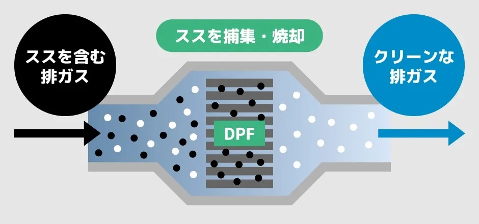
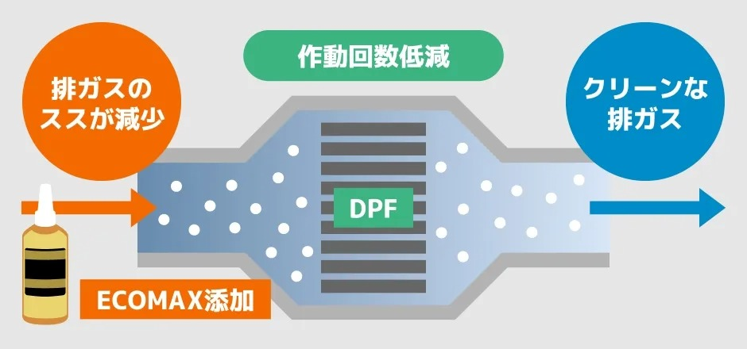

🔍 特長と効果
- ✅ 燃焼効率UP
- ✅ 排出ガス削減
- ✅ 燃費最大12.7％向上
- ✅ DPF負担を軽減

「ECOMAX®」は、軽油やガソリンに混ぜるだけで、燃焼効率を高め、排出ガスの抑制・燃費向上を実現する燃料添加剤です。トラック・バス・建機・乗用車など、幅広い車両で使用可能です。
| 項目 | Before | After | 向上率 |
|---|---|---|---|
| 燃費 | 4.71 km/L | 5.31 km/L | 約12.7% |
| DPF再生頻度 | 高頻度 | 低頻度 | 大幅削減 |
初回添加：タンク容量に対して1/1000の割合
2回目以降：追加給油量に対して1/2000
株式会社NEXTone（ネクストワン）
🚚 法人・個人どちらも対応可
📞 フリーダイヤル：0120-773-743
📩 メール：nextone0623@gmail.com
DPFとは：排ガスに含まれるPM（スス）を除去するためにマフラーに装着されているフィルターです。使い続けると目詰まりを起こすため、定期的な洗浄や新品交換が必要になります。
ECOMAXを添加することで、排出されるスス量が減り、DPF作動頻度も低下。洗浄・交換コストを大きく削減できます。

軽油 月間100KL使用／燃料単価128円/L の場合：
 


ECOMAXを使用することで燃焼効率が向上し、軽油使用量が削減されます。以下はUDトラック5台で行った実測データです。
| 車両情報 | クラス | 添加前平均燃費 | 添加後平均燃費 | 伸び率 |
|---|---|---|---|---|
| ①MK (Condor) | 中型 | 6.39 km/ℓ | 7.53 km/ℓ | 17.8% |
| ②CG (Quon) | 大型 | 4.71 km/ℓ | 5.31 km/ℓ | 12.7% |
| ③CD (Quon) | 大型 | 4.71 km/ℓ | 5.31 km/ℓ | 11.3% |
| ④CG5ZA | 大型 | 4.63 km/ℓ | 5.66 km/ℓ | 22.2% |
| ⑤CD5ZA | 大型 | 5.31 km/ℓ | 5.90 km/ℓ | 11.1% |
※メーカー調べ